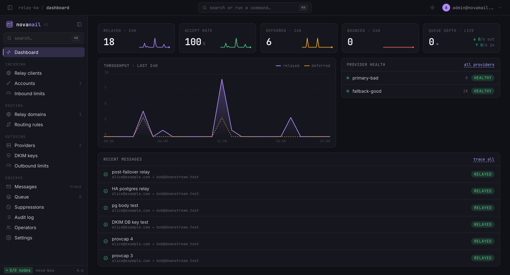
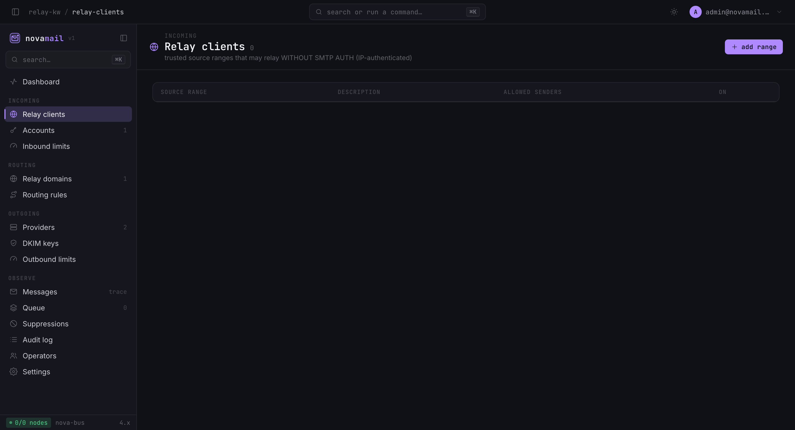
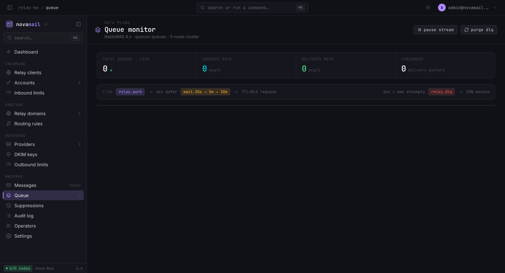
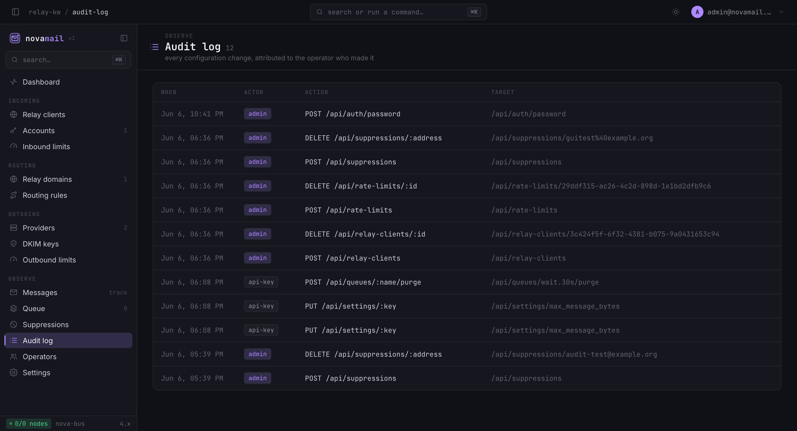
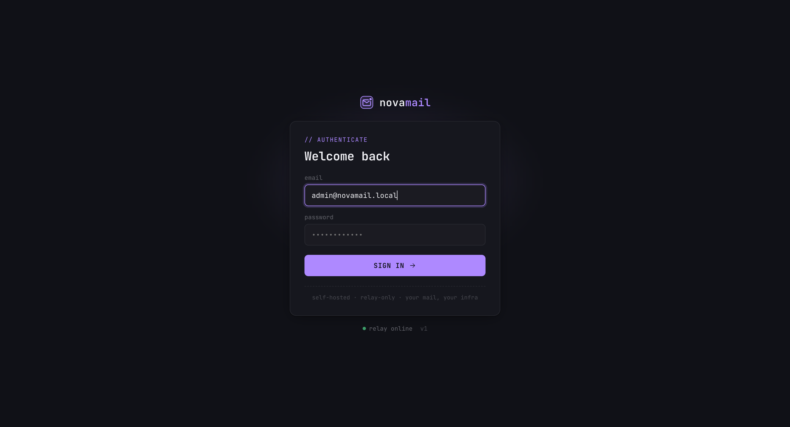

Clients submit mail; the relay authorizes, queues, DKIM-signs, and forwards each message through a pluggable, authenticated upstream provider (Gmail/Workspace XOAUTH2, Amazon SES, Microsoft 365, or a generic SMTP smarthost). Two decoupled planes: a React + Fastify management plane for config, and a Go data plane that keeps relaying even during brief control-plane outages.
The console





What it does
Authenticated submission
SMTP AUTH accounts or trusted-CIDR relay (IP-authenticated), per-account IP pinning, relay-domain gate, inbound rate limiting, SMTP/submission/SMTPS listeners.
Routed, failover delivery
Recipient → sender → default routing with per-rule failover chains; retry tiers (30s/5m/30m) → DLQ → RFC 3464 bounces.
DKIM signing
Per-domain keys with rotation, generated in the GUI (DNS TXT returned); private keys envelope-encrypted at rest.
Deliverability
Suppression list + provider bounce/complaint feedback; per-recipient-domain and per-provider rate limits.
HA & resilient
3-node RabbitMQ quorum queues, HA Postgres (1 primary + 2 sync replicas, auto-failover), 2× data-plane replicas + PDBs.
Operable
Operator login + roles (admin/viewer), full audit log, Prometheus metrics, message tracing, queue purge / requeue.
Message flow
- submit → ingress authorizes → body to Postgres, metadata to Postgres → publish job to
relay.work(routing key = recipient domain) - delivery consumes (manual ack) → resolve route → DKIM-sign → relay to provider → ack on success
- transient 4xx → wait tier (TTL+DLX) → retry · permanent 5xx / exhausted → DLQ → DSN bounce
Deploy
helm upgrade --install novamail deploy/helm/novamail -n novamail --set image.tag=<tag>
Also ships deploy/docker-compose/ (single host) and deploy/systemd/ (bare metal).
Architecture & build contract: see the repository and CLAUDE.md.